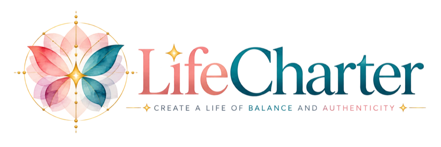

Week 2 · The Cocoon
Character is who you are when no one's watching, and who you're becoming, one choice at a time.
Movement 1
Clear sight, not self-punishment. How closely do my everyday actions match what I say matters to me?
My character today circle one
Three words the people closest to me would use to describe me
Where do I show up as my best self?
Where, or with whom, do I slip?
Under what pressures do I most often slip: tired, scared, rushed, criticized?
Movement 2
Look at each belief you carry about this part of your life. Is it true for me? Is it mine, or was it handed to me? Does it lift me, or weigh me down?
Beliefs people sometimes carry (which feel familiar?)
My belief sorter write each belief, then circle
| The belief | Whose is it? | Effect |
|---|---|---|
| mine · handed | lifts · weighs | |
| mine · handed | lifts · weighs | |
| mine · handed | lifts · weighs | |
| mine · handed | lifts · weighs | |
| mine · handed | lifts · weighs | |
| mine · handed | lifts · weighs |
My Truth 3–5 sentences, present tense, the beliefs I choose to live by
Movement 3
Picture the person you're becoming. How do you handle conflict? How do you treat people under pressure? What do you do when you get it wrong? What's it like to be around you?
The qualities I choose to live by circle up to five, or add your own
honest · courageous · kind · generous · patient · loyal · humble · fair · joyful · grateful · faithful · compassionate · disciplined · forgiving · curious · dependable · gentle · bold · present · resilient
Me at my best, living these qualities present tense, specific enough to picture
Movement 4
Living these qualities matters to me because…
The people who will feel the difference are…
If nothing changes here, what it costs me is…
Movement 5
Wing-sized: practices, choices and boundaries sized to the life you actually have. Two or three you'll keep beat ten you'll drop by Thursday.
My daily check-in where did I live my qualities today, where did I miss, what will I do tomorrow
My "when this happens" plan when ___ happens, I will ___
How I'll repair when I get it wrong character isn't never failing
Who helps me see myself clearly one trusted person who tells me the truth, kindly
Movement 6
This week, I will…
When
How I'll know I did it
Movement 7 · Soul Challenge
Each day for seven days, make one small choice that lives out one of your qualities, when no one is watching and no one will ever know. Write the quality and the choice.
Reading all seven lines together, I notice…
To bring to this week's Gathering: Which unseen choice surprised you?
Head up. Wings out.
My LifeCharter · Dimension 2 of 12
Your final words from this week, copied clean. This page becomes your Character chapter. You'll sign all twelve in Week 12.
My Truth the beliefs I choose to live by
My Horizon my character thriving
My Why why it matters to me
My Flight Plan the anchors, rhythms and boundaries I'm keeping
Completed on
My initials